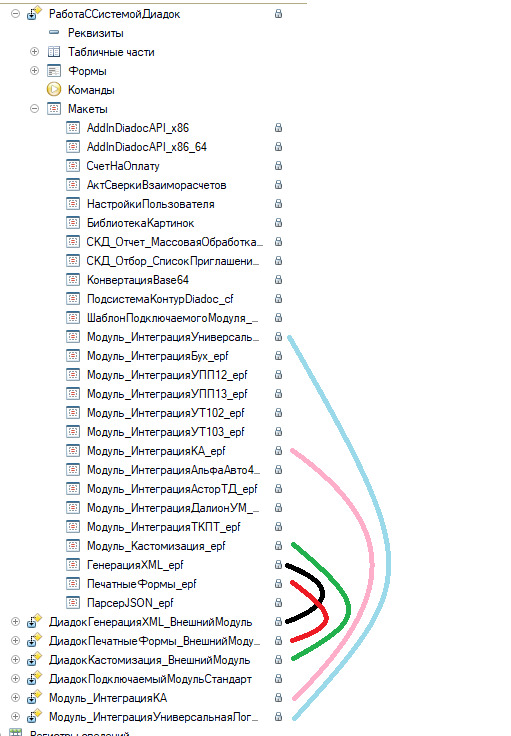
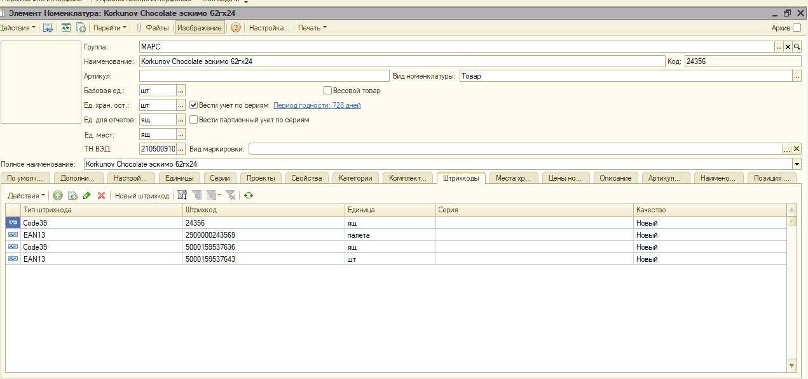
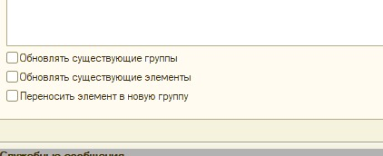

Слава Привет! Позвонила Черёмина Светлана и попросила решить такую проблему. В интерфейсе холодильников у контрагента Осипова код: 20110\0 есть два маршрута 103 и 106.
Светлана сказала, что 106 необходимо убрать, но для этого ей не хватает прав пользователя. Я эту позицию нашел. Можно удалять эту запись в регистре?
15.06.21, 09:30 - Комаров Слава: Да. Можно
15.06.21, 09:34 - Андрей: Ок!
15.06.21, 09:34 - Андрей: Спасибо
15.06.21, 09:34 - Комаров Слава: Ага
15.06.21, 10:02 - Андрей: <Без медиафайлов>
Ещё вопрос🤓 .... не пускаютЪ
15.06.21, 10:05 - Комаров Слава: Свой логин и пароль попробуй
15.06.21, 10:07 - Андрей: 🙈 Спасибо
15.06.21, 11:19 - Андрей: Нужен чек?
15.06.21, 11:19 - Андрей: Фотать?
15.06.21, 11:20 - Комаров Слава: Нет. Я его в принципе вижу в офд. Оставь как есть
15.06.21, 11:20 - Андрей: Окъ
15.06.21, 13:07 - Андрей: Там оператор Алина звонила и говорит не может зайти в 1с-ку потому что нет свободной лицензии
15.06.21, 13:08 - Андрей: Что можно сделать?
15.06.21, 13:18 - Комаров Слава: Выгнать кого-то ненужного
15.06.21, 13:34 - Андрей: Ок!
18.06.21, 15:01 - Андрей: Слава Привет! Если получится почитай. Я там рассказываю как я пытаюсь диадоковскую обработку обновить... если сможешь дай какие-нибудь советы...Вроде это не горит
18.06.21, 15:01 - Андрей: <Без медиафайлов>
Диадок.docx
18.06.21, 19:00 - Комаров Слава: В целом да, но две заметки. Кастомное объединение с включением изменений с двух сторон делается немного по-другому, более проще. Потом покажу.
А второе, более критичное, это то, что контуровцы используют вынесение части логики во внешние обработки, а сами эти обработки они прилепили как бинарные макеты и нужно проводить объединение и там. С анализом внесенных изменений.
18.06.21, 19:04 - Комаров Слава: 
Вот эти обработки. Я их сделал в составе конфигурации. И их нужно тоже анализировать. Короче все непросто :(
>18.06.21, 19:29 - Андрей: 😱
>18.06.21, 19:30 - Андрей: Ну понял! Спасибо! В понедельник буду ковырять!
>23.06.21, 15:02 - Андрей: IMG-20210624-WA0023.jpg (файл добавлен)
Слава Привет! Тут вопросик к тебе маленький! Загружали от Януса новую номенклатуру. И при проверки штрихкодов обработка выдала ошибку, что разные коды товаров (разный товар)
>23.06.21, 15:03 - Андрей: Мариам говорит, что всё норм это просто разные ШК у штуки и у коробки.
>23.06.21, 15:06 - Андрей: IMG-20210624-WA0022.jpg (файл добавлен)
По вот этому ШК 5000159537643 в номенклатуре нашлась такая позиция
>23.06.21, 15:07 - Андрей: Вопрос в том, можно ли грузить или нет?
23.06.21, 15:07 - Комаров Слава: Грузите
23.06.21, 15:07 - Комаров Слава: Максимум перепутаются единицы
>23.06.21, 15:08 - Андрей: Просто еще Уваркова говорит, что если что -то не так то пострадает штучная торговля с заправками....что то типо того
23.06.21, 15:08 - Комаров Слава: А если галки при импорте товаров не ставить, то и вообще пох
23.06.21, 15:08 - Комаров Слава: Галки не ставьте
23.06.21, 15:08 - Комаров Слава: Лишнее не пройдет
23.06.21, 15:09 - Комаров Слава: Остальное руками можно поправить
>23.06.21, 15:09 - Андрей: 
Эти?
23.06.21, 15:09 - Комаров Слава: Да
>23.06.21, 15:09 - Андрей: Всё понял! Спасибо